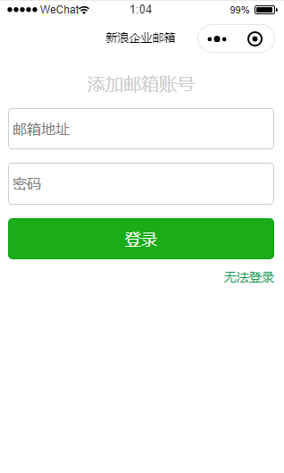
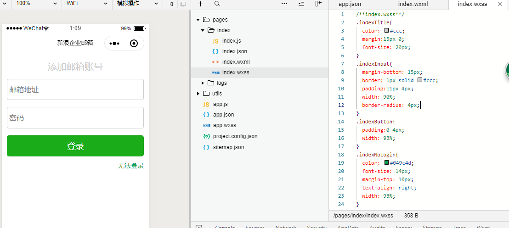

1.首先下载小程序开发工具
2.小程序中的wxml就相当于html , wxss就相当于css
3.布局和html布局几乎一样
4.宽度使用百分比
5.input框里的文字上下居中是用padding撑出来的
6.最下面的文字靠右，view相当于一个块元素，设定宽度后，text-align右对齐
简单的测试界面如图

index.wxml代码
<!--index.wxml-->
<view class="container">
<text class="indexTitle">添加邮箱账号</text>
<view class="indexInput">
<input maxlength="10" placeholder="邮箱地址" />
</view>
<view class="indexInput">
<input maxlength="10" placeholder="密码" />
</view>
<view class="indexButton">
<button type="primary"> 登录 </button>
</view>
<view class="indexNologin">
<a href=""> 无法登录 </a>
</view>
</view>index.wxss代码
/**index.wxss**/
.indexTitle{
color: #ccc;
margin:15px 0;
font-size: 20px;
}
.indexInput{
margin-bottom: 15px;
border: 1px solid #ccc;
padding:11px 4px;
width: 90%;
border-radius: 4px;
}
.indexButton{
padding:0 4px;
width: 93%;
}
.indexNologin{
color: #049c4d;
font-size: 14px;
margin-top: 10px;
text-align: right;
width: 93%;
}
